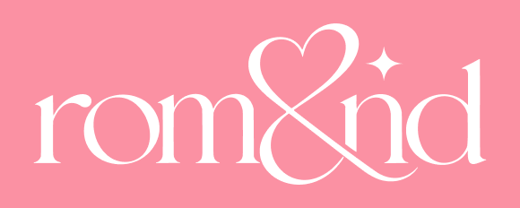
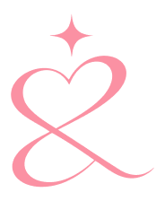
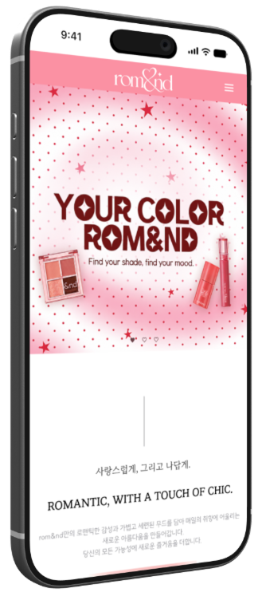
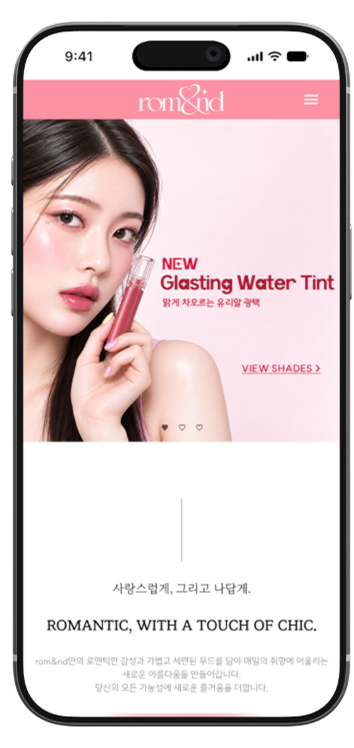
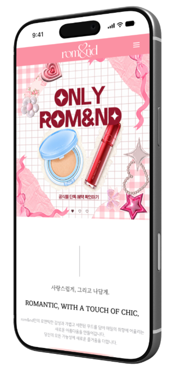

01 / FIND
제품 탐색의 시작점을 명확하게
문제점
메뉴와 콘텐츠가 여러 영역에 분산되어 원하는 제품까지 빠르게 접근하기 어렵고, 카테고리와 상품 정보의 위계가 명확하지 않았습니다.
설계 방향
카테고리와 상품 정보의 위계를 정리해 원하는 제품을 더 빠르고 직관적으로 찾을 수 있도록 탐색 구조를 개선했습니다.
01 / TEAM PROJECT / WEBSITE REDESIGN
기존 롬앤 웹사이트의 복잡한 상품 탐색 구조와 구매 흐름을 개선하고, FIND · COMPARE · BUY를 중심으로 직관적인 사용자 경험을 구현한 웹 리디자인 프로젝트입니다.
OVERVIEW
롬앤의 브랜드 아이덴티티를 유지하면서 상품 탐색과 구매 흐름을 중심으로 새롭게 재구성했습니다. 컴포넌트와 디자인 시스템을 기반으로 일관된 사용자 경험을 구현했습니다.
DESIGN DIRECTION
제품을 찾고 비교하고 구매하는 세 가지 행동을 중심으로 탐색 구조와 정보의 우선순위를 정리했습니다.
01 / FIND
메뉴와 콘텐츠가 여러 영역에 분산되어 원하는 제품까지 빠르게 접근하기 어렵고, 카테고리와 상품 정보의 위계가 명확하지 않았습니다.
카테고리와 상품 정보의 위계를 정리해 원하는 제품을 더 빠르고 직관적으로 찾을 수 있도록 탐색 구조를 개선했습니다.
02 / COMPARE
컬러와 제품 정보가 한눈에 비교되지 않고 상품명, 컬러, 옵션이 분산되어 제품 선택 과정이 길어졌습니다.
컬러와 제품 정보를 한눈에 비교할 수 있도록 정보의 우선순위를 재정리했습니다.
03 / BUY
제품 정보와 옵션 선택, 구매 과정이 여러 단계로 나뉘고 다음 행동의 우선순위가 명확하게 보이지 않았습니다.
제품 정보에서 옵션 선택과 구매까지 자연스럽게 이어지도록 사용자 흐름을 간결하게 구성했습니다.
DESIGN SYSTEM
브랜드 특유의 사랑스럽고 트렌디한 이미지를 전달하도록 워드마크를 재해석했습니다. 부드러운 곡선의 세리프 타입과 & 형태에 핑크 컬러를 적용해 생기 있고 키치한 브랜드 무드를 표현했습니다.


선명한 핑크를 중심으로 다채로운 제품과 컬러 톤을 표현했습니다. 밝은 컬러는 배경과 프로모션에, 중간 톤과 딥 컬러는 버튼·텍스트·강조 요소에 적용해 정보의 위계를 구분했습니다.
밝고 트렌디한 감성을 유지하면서 다양한 화면에서 명확한 정보 위계와 가독성을 유지하도록 설계했습니다. 기본 서체는 SUITE를 사용하고, 크기와 Regular·Bold의 차이로 제목·상품명·본문의 역할을 구분했습니다.
SUITE
| 역할 | 적용 예시 | 굵기 / 크기 |
|---|---|---|
| Title | 메인 타이틀 | Bold 39px |
| Subtitle | 콘텐츠 타이틀 | Bold 25px |
| Body | 본문 텍스트 | Regular 16px |
| Caption | 보조 설명 | Regular 13px |
WEB EXPERIENCE
메인에서 상품 목록과 상세, 장바구니·로그인·비회원 주문조회까지 연결되는 화면을 구성했습니다. 포트폴리오 메인의 페이지 버튼에서 실제 동작도 확인할 수 있습니다.


